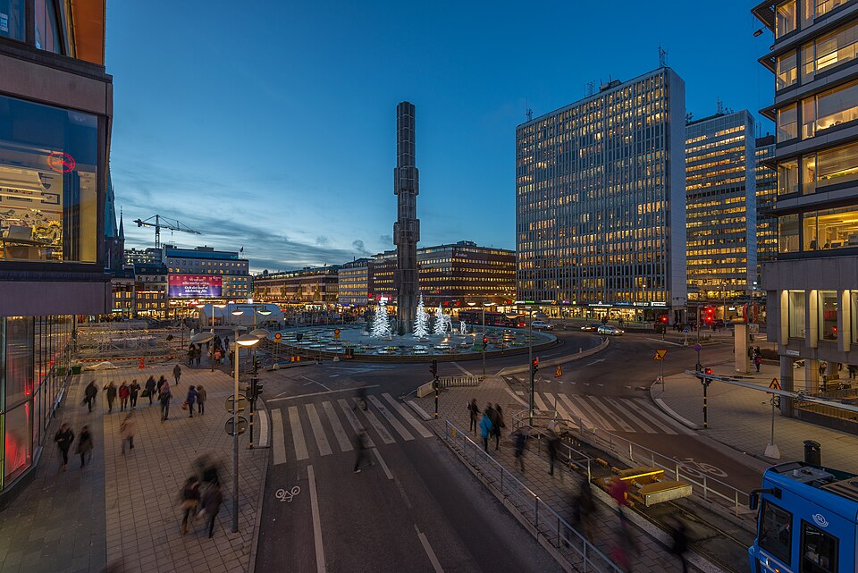
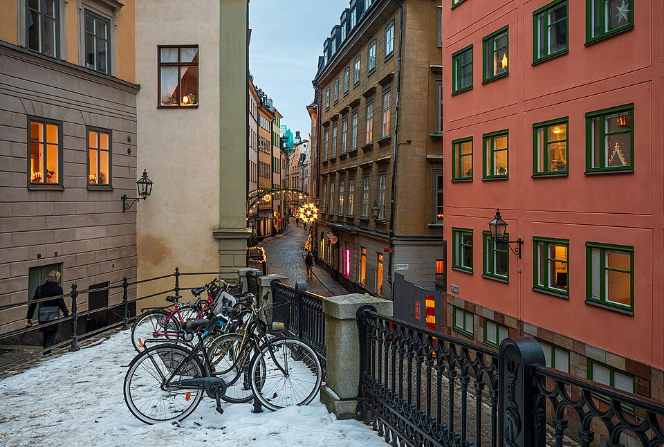
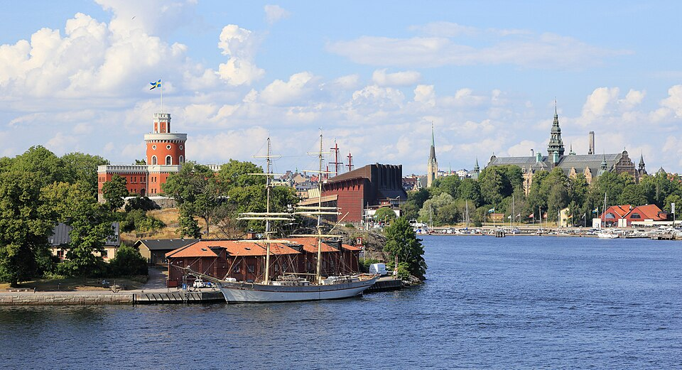
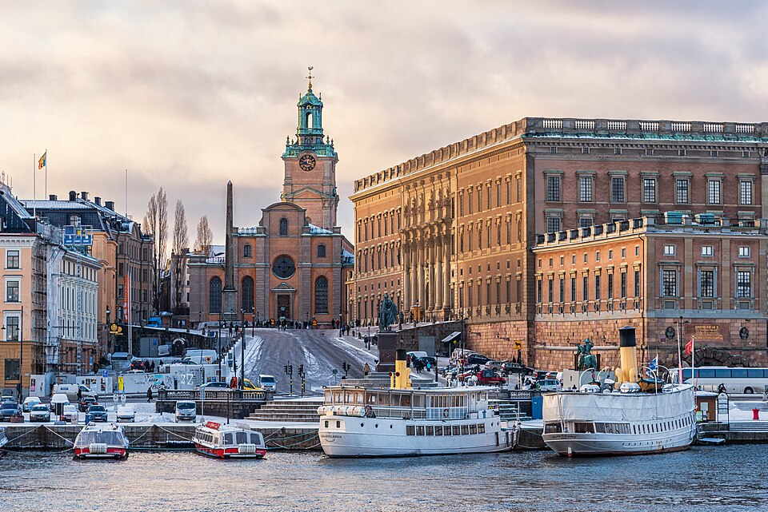
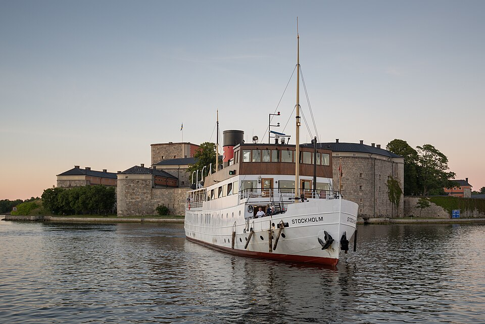
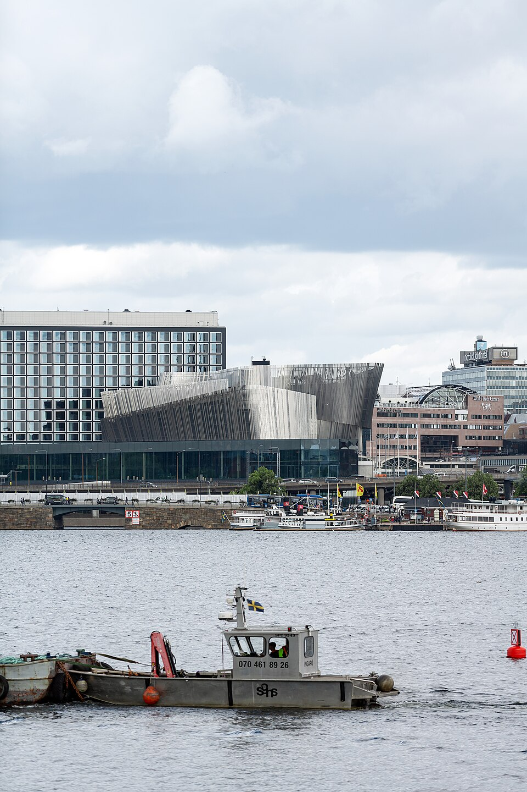

Multimédia
Descubra Estocolmo através de fotografias, vídeo e poesia.

Uma cidade feita de ilhas e histórias.
Fotografias







Vídeo
Uma cidade em movimento
O vídeo como parte do ambiente da página.
Entre ilhas e horizontes
Uma imagem que acompanha o movimento da página.
Poesia
Entre ilhas, pontes e luz do norte,
Estocolmo acorda junto ao mar,
cada rua guarda uma história
e cada janela aprende a brilhar.
Na água repousa a cidade,
serena, fria e musical,
um encontro de terra e horizonte
no coração do Báltico azul.